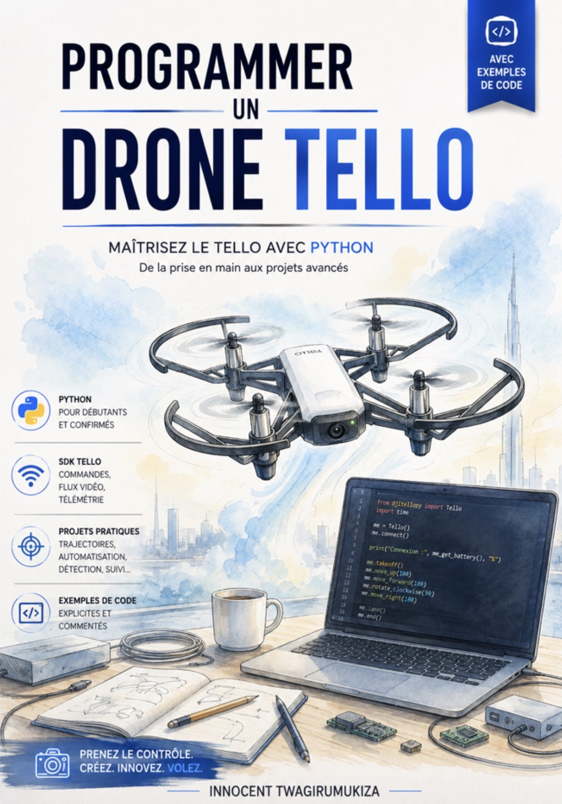
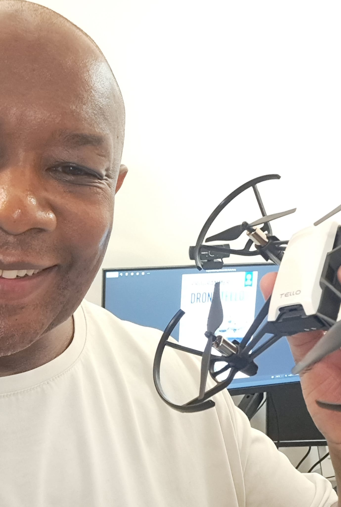

Souvenez-vous de cet avion de papier que vous lanciez dans la cour, dans votre chambre ou depuis le bord d'une table.
Nous étions fascinés par une chose toute simple : faire voler quelque chose que nous avions fabriqué. Puis, avec le temps, la question change. Et si nous pouvions décider précisément de sa trajectoire ? Et s'il pouvait tourner, monter, avancer… sans que nous le poussions ?
Le drone transforme cette curiosité d'enfant en terrain d'expérimentation. La programmation ajoute une nouvelle dimension : vous imaginez le mouvement, vous l'écrivez, puis vous observez le résultat dans le monde réel.
“ Programmer un drone, c'est donner des ailes à une idée.
Remember that paper plane you launched in the yard, in your bedroom, or off the edge of a table.
We were fascinated by one simple thing: making something we'd built fly. Then, over time, the question changes. What if we could decide its exact path? What if it could turn, climb, move forward… without us pushing it?
The drone turns that childhood curiosity into a playground for experimenting. Programming adds a new dimension: you imagine the movement, you write it, then you watch the result play out in the real world.
“ Programming a drone means giving wings to an idea.

02 — Le livre
02 — The book
Apprendre à coder. Voir son code voler.
Learn to code. Watch your code fly.
De la prise en main aux projets avancés, ce guide vous accompagne pas à pas pour découvrir la programmation d'un Tello avec Python.
From your very first flight to advanced projects, this guide walks you step by step through programming a Tello with Python.
04Code examplesClear, progressive and well-commented
03 — L'expérience
03 — The experience
Pas seulement un livre technique
Not just a technical book
⌨Écrire
Comprendre les instructions Python et construire progressivement ses premiers programmes.
◉Tester
Connecter le programme au Tello et transformer une ligne de code en action concrète.
✦Créer
Aller plus loin avec des trajectoires, des automatismes et des projets qui donnent envie d'expérimenter.
⌨Write
Understand Python instructions and progressively build your first programs.
◉Test
Connect the program to the Tello and turn a line of code into a real action.
✦Create
Go further with flight paths, automations and projects that make you want to experiment.

04 — L'auteur
04 — The author
Innocent Twagirumukiza
Formateur et passionné par les technologies numériques, j'aime transformer des concepts techniques en expériences concrètes et accessibles.
A trainer passionate about digital technology, I love turning technical concepts into concrete, approachable experiences.
Avec ce livre, l'idée est simple : ne pas rester spectateur de la technologie. Prenez un drone, ouvrez votre éditeur de code, essayez, observez, corrigez… et recommencez.
With this book, the idea is simple: stop watching technology from the sidelines. Take a drone, open your code editor, try, observe, fix… and try again.